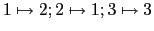
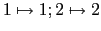

Next: Web drawing framework
Up: Components description
Previous: Components description
Contents
Classes:
- Binary operation classes:
Addition, Multiplication, Composition. They are functors used to represent binary operations between elements of the groups. The overloaded operator() implements the operation described by each class. Also used as policies.
Files: binary_op.h
cPermElem - permutation element class.
Public methods:
cPermElem() - default constructor implements empty permutation
cPermElem(std::size_t size) - constructs the identity permutation of a given size
cPermElem(std::vector<std::size_t> &permutation_array) and cPermElem(std::vector<std::size_t> *permutation_array) - constructs a permutation with the given permutation array
cPermElem(std::size_t size, const std::initializer_list<std::size_t> &perm_sq) - constructs a permutation from a given cycle representation (Ex: cPermElem(3, 1, 2) is the permutation
)
cPermElem(const std::initializer_list<std::size_t> &perm_sq) - constructs a permutation with the image array given as parameter(Ex: cPermElem(1, 2) is the permutation
)
cPermElem(const cPermElem &permutation) and cPermElem& operator=(const cPermElem &permutation) - copy constructor and assignment operator
~cPermElem() - destructor
std::vector<std::size_t>* GetPermutationArray()const - returns the underlying permutation array
cPermElem operator*(const cPermElem &perm)const - multiplication operator for permutations
bool operator==(const cPermElem &perm)const and bool operator!=(const cPermElem &perm)const - test for equality/inequality operators
friend std::ostream& operator<<(std::ostream &of, const cPermElem &perm) - output operator
std::size_t GetImage(const std::size_t set_element)const - return the image of an element under the permutation action
cPermElem GetMultInverse()const - returns the inverse of the permutation
std::size_t GetSize()const / void SetSize(const std::size_t size) - gets/sets permutation size
cPermElem GetIdentity(BINOP binop)const - returns the identity permutation of the same size(Multiplication must be given as parameter)
Files: permutation.h
cGroupElem - class to represent the group elements, must be instantiated with the element type and binary operation supported(Ex: cGroupElem<cPermElem, Multiplication> group_perm_elem;)
Public methods:
cGroupElem(); cGroupElem(T &concrete_obj); cGroupElem(const T &concrete_obj) - constructors
cGroupElem(const SelfType &group_elem) and SelfType &operator=(const SelfType &elem) - copy constructor and assignment operator
std::size_t GetOrder()const - returns the element order
std::size_t GetOrder(std::size_t group_order) - returns the element order using the group order as parameter by applying Lagrange theorem
SelfType GetInverse()const - returns the inverse of the element
SelfType GetNthPower(std::size_t n)const - returns the nth power of the element
bool CommutesWith(const SelfType &element)const - returns true if the element commutes with the element given as parameter, otherwise returns false
bool IsNormalizer(const std::vector<SelfType> &elements)const - returns true if the element is a normalizer for the given set, otherwise returns false
SelfType GetIdentity()const - returns the identity for this type of group element
BinaryOp GetBinaryOp()const - returns the binary operation used to instantiate the class
Files:group_elem.h
cSymmetricRep - this class is one of the internal representation types for groups of permutations; must be instantiated with the group element type(Ex: cSymmetricRep<cGroupElem<cPermElem, Multiplication> >) and must be used as the underlying representation for cGroup class(Ex: cGroup< cGroupElem< cPermElem, Multiplication >, cSymmetricRep > SymmetricGroup)
Public methods:
cSymmetricRep(), cSymmetricRep(std::vector<T> &generators_set), cSymmetricRep(std::initializer_list<T> perm_list) - constructors, this class must be constructed by giving a set of generators
cSymmetricRep(const SelfType &sym_rep) and cSymmetricRep& operator=(const SelfType& sym_rep) - copy constructor and assignment
friend std::ostream& operator<<(std::ostream& out,const SelfType &group_rep) - output operator
bool Contains(const T &element)const - checks if the group contains the element given as argument(uses Dimino algorithm to obtain the list of elements)
std::vector<T> GetElementsNaive()const - returns the elements of the group using the naive algorithm
std::vector<T> GetElementsDimino()const - returns the elements of the group using the Dimino algorithm
std::vector<std::size_t> GetOrbit(const std::size_t &set_element)const - returns the orbit of the given element under the group actions
const std::vector<T> &GetGeneratorsSet()const / void SetGeneratorsSet(const std::vector<T> &gen_set) - get/set the group generators
void AddGenerator(const T &element) - adds new generator to the group(just adds it to the generator list member; doesn't recompute the group elements)
bool operator==(const SelfType &symgrp)const and bool operator!=(const SelfType &symgrp)const - equality/inequality test operator
T GetIdentity()const - returns the group identity element
std::vector<T> GetCyclicSubgroup(const T& element)const - returns the cyclic subgroup generated by the element given as parameter
Files: symmetric_rep.h
cGroup - class used to represent a group, it instantiates and automatically inherits a group representation(Ex: cSymmetricRep)
Public Methods:
cGroup(), cGroup(std::vector<ElementType> &gr_vec), cGroup (std::initializer_list<T> ini_list) - constructors
cSubgroup<SelfType> GetCentralizer(const cSubgroup<SelfType> &_subgrp)const - returns the centralizer subgroup
cSubgroup<SelfType> GetCenter()const - returns the center subgroup
cSubgroup<SelfType> GetNormalizer(const cSubgroup<SelfType> &_subgrp)const - returns the subgroup with the elements normalizing the subgroup given as parameter
std::vector<ElementType> GetCentralizerEl(ElementType &element)const - returns the elements composing the centralizer subgroup of the group
std::vector<ElementType> GetCenterEl()const - returns the elements composing the center subgroup of the group
std::vector<ElementType> GetNormalizerEl(const cSubgroup<SelfType> &_subgrp)const - returns the elements normalizing the subgroup given as parameter
Files: group.h
cSubgroup - represents a subgroup, inherits from cGroup class
Public methods:
cSubgroup(), cSubgroup(std::vector<T> gr_vec), cSubgroup(G &group) - constructors
bool isNormal()const - returns true is the subgroup is a normal subgroup, otherwise returns false
void isNormal(const bool normal) - sets the normality attribute of the subgroup
Files: subgroup.h
cCayleyGrf - represents the cayley graph of the group (uses the boost graph library for the graph underlying structure)
Public methods:
cCayleyGrf(std::vector<ElemType> &elements, std::vector<ElemType> &generators), cCayleyGrf(G &group ) - constructors
cCayleyGrf(const cCayleyGrf &graph), cCayleyGrf &operator=(const cCayleyGrf &graph) - copy constructor and assignment operator
void BuildGraph() - builds the cayley graph of the group
void BuildDefRelations() - builds the set of defining relations
friend std::ostream& operator<<(std::ostream& out, const cCayleyGrf &graph) - output operator(prints the cayley graph)
Graph* GetGraph()const - returns the cayley graph
const std::vector<cRelation>& GetDefRelations()const - returns the defining relations of the group
Files: cayley_graph.h
cRelation - class used to represent a group relation as a vector of pairs of group elements
Files: cayley_graph.h
Next: Web drawing framework
Up: Components description
Previous: Components description
Contents
2011-06-28